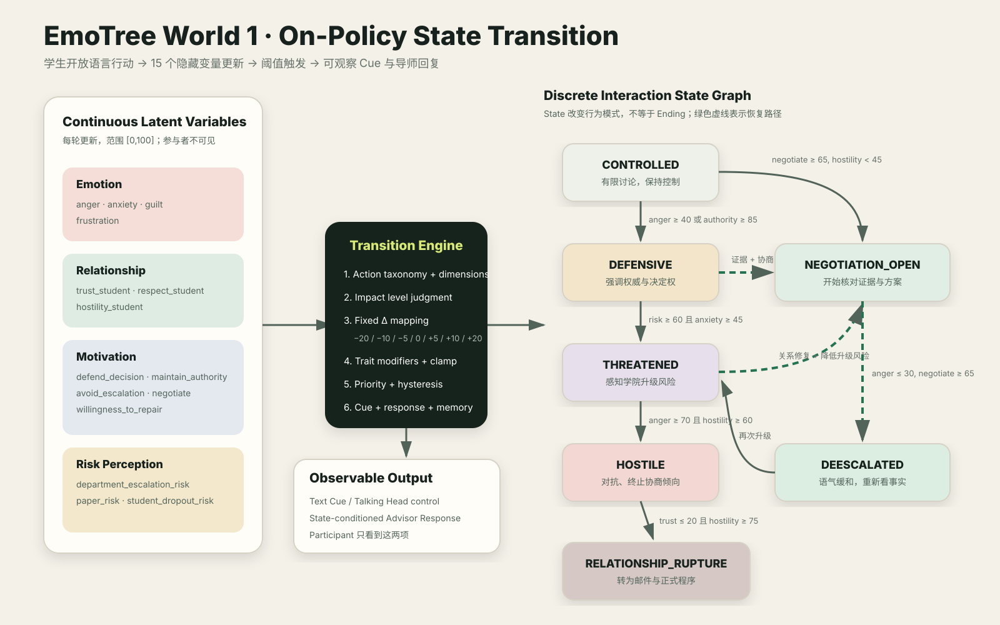

Emo
Tree
Demo
Researcher / Debug View
State Transition
Inspector
此页面包含 latent variables、隐藏策略和 memory，不应展示给参与者或被评估模型。
World 1 状态转换总图
· 点击展开

先在 Participant 页面开始一个会话
Current State
Previous:
Observable Cue
Triggered Rule
Latent State
Detected Action
Trajectory
Conversation
Internal Research Log